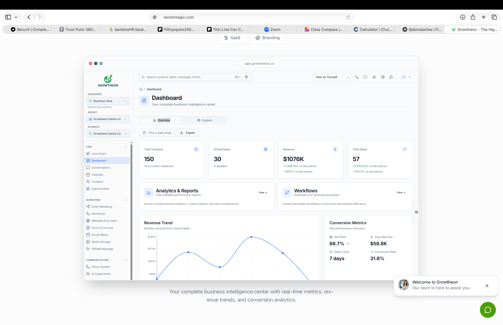

Empowering entrepreneurs to launch, grow & scale profitable diagnostic testing businesses
Empowering entrepreneurs through education and mentorship.

Expanding our family:
200+ Entrepreneurs to date
Everything You Need to Launch Your Diagnostic Business
From certification to your first client, we provide the training, tools, and ongoing support to help you build a profitable mobile testing business.

Ready to learn?
Explore our full catalog of virtual and in-person courses designed to help you build a thriving diagnostic testing business.
Very minimal costs to start
Low Overhead
Starting a mobile diagnostic testing service can be done with relatively low startup costs compared to many traditional businesses. With the right training, supplies, and lab partnerships, you can begin offering services without the need for expensive equipment or large operational expenses.
Anyone can do this
Felony Friendly
The diagnostic testing industry offers opportunities for individuals from diverse backgrounds who are committed to building a legitimate business. With the right structure, professionalism, and dedication to compliance, many individuals—including those seeking a fresh start—have successfully entered this field and built sustainable service businesses.
Start as a mobile business
No office or location needed
Many testing services can be performed through mobile appointments, allowing you to meet clients at offices, job sites, or approved collection locations. This flexibility allows you to operate your business without the immediate need for a physical office space while still providing professional and compliant services.
Ready to learn?
Each training program is carefully designed to develop both technical expertise and business readiness, ensuring you gain the knowledge and confidence needed to succeed in the diagnostic testing industry. Throughout your training, you will learn industry procedures, required documentation, compliance standards, and the operational workflows necessary to provide testing services professionally, ethically, and responsibly.
Our goal is to ensure that you leave training with more than just a certification or new skill set. We want every participant to walk away with a clear understanding of how diagnostic testing services operate in real-world environments, along with practical strategies that can be immediately implemented within their own business.
We recognize that every entrepreneur learns differently and has unique scheduling needs. That's why we offer multiple training formats to fit your learning style and availability. From immersive, hands-on in-person workshops and business mastermind sessions to virtual certification courses and self-paced learning opportunities, each program is designed to provide expert instruction, interactive discussions, real-world scenarios, and actionable insights that you can apply immediately to launch, grow, or expand your business.